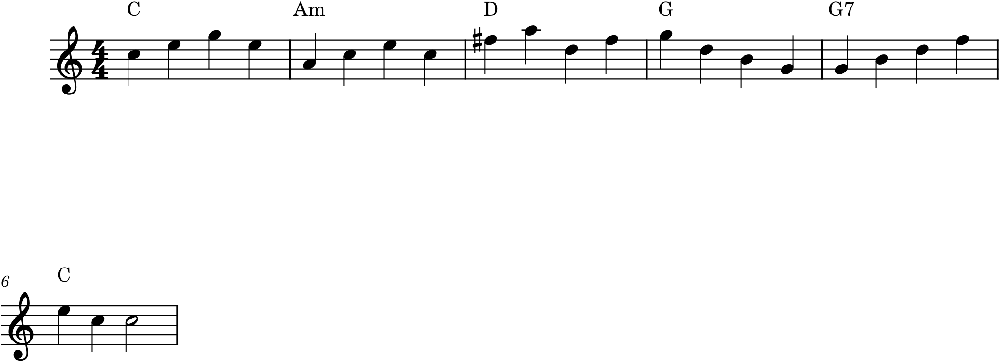

Part 4 is about form — how music is organized across its whole length, into sections that depart and return, contrast and resolve. But large-scale form depends on a technique we have so far avoided: modulation, the art of changing key in the middle of a piece. A piece that never leaves its home key is like a story with only one location; modulation is how music travels — creating tension by going away from home and satisfaction by coming back. That journey, out and home, is the engine of nearly every form in this part, so we begin with it.
22.1What modulation is
To modulate is to change the tonal centre — to establish a new home key in the course of a piece, so that a different note now feels like “home,” with its own scale, its own chords, its own leading tone. This is more than borrowing a chord in passing. Sounding a single chord from another key, or briefly leaning on a chord as if it were a temporary tonic — called tonicization — is a quick colouring that does not disturb the prevailing key. A true modulation goes further: it confirms the new key, usually with a cadence in it, and stays long enough that the ear resets its sense of home. The difference is one of degree and commitment — a visit versus a change of address.
22.2Where to modulate
You cannot travel just anywhere gracefully. The smoothest modulations go to closely related keys — those that differ from the home key by only one sharp or flat, the immediate neighbours on the circle of fifths (Chapter 8). Because such keys share almost all their notes and chords with home, moving between them is easy and the return is natural. Two destinations are by far the most common, and they are the ones to learn first:
- From a major key, modulate to the dominant. A piece in C major moves to G major — the key a fifth above, one sharp added (F♯). This is the default journey in an enormous amount of music: away to the dominant, and back.
- From a minor key, modulate to the relative major. A piece in A minor moves to C major — its relative, sharing the same key signature (Chapter 8). The lift from minor to its brighter relative is one of the most characteristic moves in the repertoire.
Other close destinations — the subdominant, the relative minor of a major key — are available too, but the dominant and the relative major are the highways, and they are enough for everything in this book.
22.3The pivot chord
The smoothest way to modulate is through a pivot chord — a chord that belongs to both keys, which you approach as a member of the old key and leave as a member of the new one. Because the pivot exists comfortably in both, the ear crosses from one key to the other without a jolt; the ground has shifted before you noticed.

Trace the harmony in Figure 22.1 and the mechanism is laid bare. The A-minor chord is the hinge — heard first as vi of C, then reinterpreted as ii of G — and everything after it is in the orbit of the new key. This double-meaning reinterpretation is the essence of pivot modulation, and A minor works here precisely because it is a comfortable, everyday chord in both keys.
22.4Confirming the new key
A pivot alone does not complete a modulation; the new key must be confirmed, and two things do it. First, a cadence in the new key — its own V–I — seals the arrival, which is why the D chord (V of G) resolving to G in Figure 22.1 is what actually establishes the new home. Second, and audibly, the appearance of the new key’s leading tone: the F♯ in bar 3 is not in C major at all, and its arrival is the surest signal that the music has moved to G, whose leading tone is exactly that F♯. Whenever you hear a new accidental appear and stick — especially a raised note functioning as a leading tone — a modulation is underway. That new accidental is the passport stamp of the new key.
22.5Coming home
Modulations almost always return. The pleasure of going away depends on the promise of coming back, and a piece that wandered off to the dominant and simply stopped there would feel unresolved, like a traveller who never came home. The return is managed the same way as the departure — often by reinterpreting a chord back toward the home key. In Figure 22.1, the very G-major chord that was the goal becomes the means of return: add an F♮ and it turns into G7, the dominant seventh of C, which pulls straight home. The chord that was a destination becomes a signpost pointing back.
This departure and return — home, away, home — is not just a nice effect; it is the fundamental shape of tonal form. The tension of being in a foreign key, and its resolution when the tonic returns, operates over whole sections and whole movements, and it is what gives large forms their sense of drama and arrival. Every form in the rest of Part 4 is, at bottom, a particular way of organizing that journey.
22.6Other ways to travel
The pivot chord is the smoothest modulation but not the only one. A direct (or phrase) modulation simply starts a new phrase in the new key, with no pivot — abrupt but effective, common between sections of songs. A common-tone modulation pivots on a single shared note rather than a whole chord, often to a more distant key, for a magical, unexpected shift. These are worth knowing, but the pivot modulation to a closely related key is the workhorse, and mastering it — out to the dominant and home again — is all you need to build the forms ahead.
In MuseScore
Modulation in MuseScore is a matter of introducing the new key’s accidentals — and, for a longer modulation, its key signature — and confirming the arrival by ear.
- For a short modulation, simply write the new accidentals in as you go (the F♯ of Figure 22.1), with ↑/↓ or the toolbar accidentals. No key-signature change is needed for a brief visit.
- For a sustained modulation, add a new key signature at the point of arrival (Chapter 8): select the measure and double-click the new key from the Key Signatures palette. MuseScore re-keys the following music, and you spell the new key cleanly.
- Label the pivot with a two-key Roman numeral analysis through Add ▸ Text ▸ Roman Numeral Analysis — the convention writes the pivot chord’s old-key function above its new-key function (here,
vioverii), showing exactly where the keys overlap. - Play it and listen for home: the modulation has worked when the new tonic sounds like rest, and the return sounds like coming back.
Try it: enter the progression of Figure 22.1 — C, A minor, D, G — as blocked chords, and play it, listening for the moment G starts to feel like home (it is the F♯ that does it). Then add the F♮ that turns G into G7 and resolve to C, and hear the pull back. You have modulated to the dominant and returned — the single most common journey in tonal music, and the foundation of everything in Part 4.